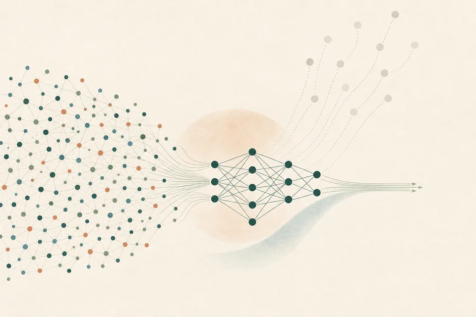
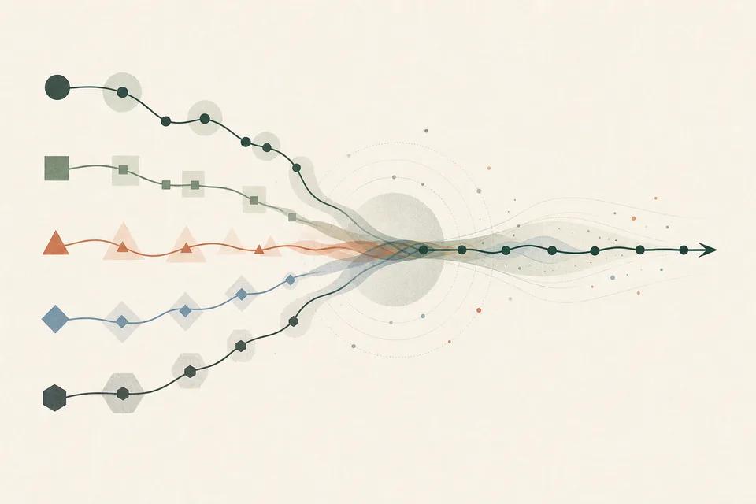

Reliable language models
Evaluating when models trust unreliable context, why reasoning does not always prevent hallucination, and how to make model outputs more dependable.
PhD candidate · Harvard Computer Science
I am a final-year PhD candidate at Harvard, advised by Sham Kakade and Jonathan Frankle.
I am funded by the Kempner Graduate Fellowship.
My work spans reliable language models, continual learning, and machine unlearning. I am broadly interested in the empirical science of deep learning: identifying consequential failure modes, understanding why they arise, and designing practical methods that make models more dependable.
Evaluating when models trust unreliable context, why reasoning does not always prevent hallucination, and how to make model outputs more dependable.
Measuring and mitigating catastrophic forgetting as models learn successive tasks, without retaining past data or adding heavy computational overhead.
Understanding which training points meaningfully influence model behavior and using that structure to make data removal substantially more efficient.
Selected work
A complete, current record is available on Google Scholar .

Identifies training examples with negligible model influence and uses them to reduce unlearning costs by up to roughly 50% in real-world settings.
Tests whether language models can distinguish reliable from untrustworthy sources—and finds that even strong reasoning models often cannot.

Introduces Sequential Fine-tuning with Averaging, retaining prior knowledge across domains without replaying old data.
Shows when a generative model trained on expert demonstrations can exceed every expert in its training set.
Anat Kleiman, Jonathan Frankle, Sham M. Kakade, Mansheej Paul
ICML Workshop on Challenges in Deployable Generative AI
Luke Bailey*, Gustaf Ahdritz*, Anat Kleiman*, Siddharth Swaroop, Finale Doshi-Velez, Weiwei Pan
ICML Workshop on Challenges in Deployable Generative AI
Angelina Wang, Alexander Liu, Ryan Zhang, Anat Kleiman, Leslie Kim, Dora Zhao, Iroha Shirai, Arvind Narayanan, Olga Russakovsky
International Journal of Computer Vision
Chi Zhang, Ryan Marcus, Anat Kleiman, Olga Papaemmanouil
AIDB Workshop at VLDB
Machine Learning Research Intern · Machine unlearning
Machine Learning Intern · Video automation
Software Engineering Intern · Self-driving vehicles
PhD in Computer Science
Advised by Sham Kakade and Jonathan Frankle
MSE in Computer Science
Worked with Ryan Adams